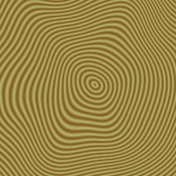
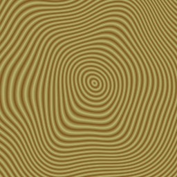
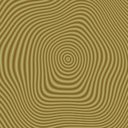
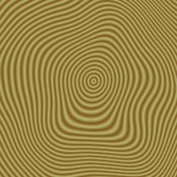
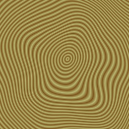
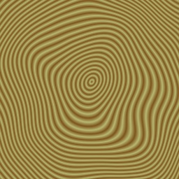
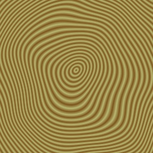
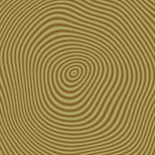

This page is not in the table of contents.The following program will generate and write out a 3-D texture to simulate woodgrain:
from direct.directbase.DirectStart import *
from panda3d.core import *
import math
# These constants define the RGB colors of the light and dark bands in
# the woodgrain.
lightGrain = (0.72, 0.72, 0.45)
darkGrain = (0.49, 0.33, 0.11)
def chooseGrain(p, xi, yi, radius):
""" Applies the appropriate color to pixel (xi, yi), based on
radius, the computed distance from the center of the trunk. """
# Get the fractional part of radius.
t = radius - math.floor(radius)
# Now t ranges from 0 to 1. Make it see-saw from 0 to 1 and back.
t = abs(t - 0.5) * 2
# Now interpolate colors.
p.setXel(xi, yi,
lightGrain[0] + t * (darkGrain[0] - lightGrain[0]),
lightGrain[1] + t * (darkGrain[1] - lightGrain[1]),
lightGrain[2] + t * (darkGrain[2] - lightGrain[2]))
def calcRadius(xn, yn, x, y, z, noiseAmp):
""" Calculates radius, the distance from the center of the trunk,
for the 3-d point (x, y, z). The point is perturbed with noise to
make the woodgrain seem more organic. """
xp = x + xn.noise(x, y, z) * noiseAmp
yp = y + yn.noise(x, y, z) * noiseAmp
return math.sqrt(xp * xp + yp * yp)
def makeWoodgrain(texSize, texZSize, noiseScale, noiseZScale,
noiseAmp, ringScale):
""" Generate a 3-D texture of size texSize x texSize x texZSize
that suggests woodgrain, with the grain running along the Z (W)
direction. Since there is not as much detail parallel to the
grain as across it, the texture does not need to be as large in
the Z dimension as in the other two dimensions.
The woodgrain shape is perturbed with Perlin noise to make it more
organic. The parameters noiseScale and noiseZScale controls the
frequency of the noise; larger numbers make smoother rings. The
parameter noiseAmp controls the effect of the noise; larger
numbers make more dramatic distortions.
ringScale controls the number of rings visible in the cross
section of the texture. A larger number makes more, denser rings.
"""
# First, create the two PerlinNoise objects to perturb the rings
# in two dimensions. This class is defined in Panda3D.
xn = PerlinNoise3(noiseScale, noiseScale, noiseZScale)
yn = PerlinNoise3(noiseScale, noiseScale, noiseZScale)
# Start by creating a empty 3-D texture.
tex = Texture('woodgrain')
tex.setup3dTexture()
for zi in range(texZSize):
z = float(zi) / float(texZSize - 1) - 0.5
# Walk through the Z slices of the texture one at a time. For
# each slice, we create a PNMImage, very much as if we were
# reading the texture from disk.
print zi
p = PNMImage(texSize, texSize)
# But instead of reading the PNMImage, we fill it in with the
# ring pattern.
for yi in range(texSize):
y = float(yi) / float(texSize - 1) - 0.5
for xi in range(texSize):
x = float(xi) / float(texSize - 1) - 0.5
radius = calcRadius(xn, yn, x, y, z, noiseAmp)
chooseGrain(p, xi, yi, radius * ringScale)
# Now load the current slice into the texture.
tex.load(p, zi, 0)
return tex
# Create a 3-D texture.
tex = makeWoodgrain(texSize = 256, texZSize = 8, noiseScale = 0.4,
noiseZScale = 0.8, noiseAmp = 0.12, ringScale = 40)
# Write out the texture. This will generate woodgrain_0.png,
# woodgrain_1.png, and so on, in the current directory.
tex.write(Filename('woodgrain_#.png'), 0, 0, True, False)
The resulting images look like this:








To get consistent (over multiple runs of the programm) values from the PerlinNoise functions a seed value != 0 has to be used, seed values equal to 0 will randomize it
The table_size is 256 by default.
PerlinNoise3( scaleX, scaleY, scaleZ, table_size, seed)
PerlinNoise2( scaleX, scaleY, table_size, seed)
PerlinNoise( table_size, seed )
{kind=link}
{kind=link}
{kind=link}
{kind=link}
{kind=link}
{kind=link}
{kind=link}
{kind=link}